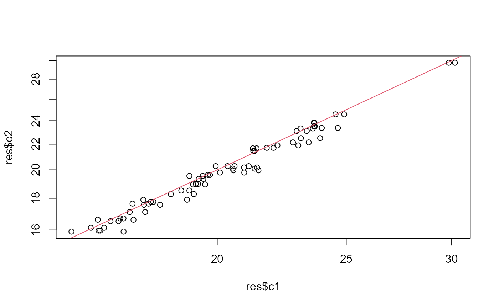

decorate the data
workflow_missigness_impute_contrasts_V2( data, config, contrasts, do_not_report = "", agg_fun = function(x) { median(x, na.rm = TRUE) }, global = TRUE )
Other deprecated:
INTERNAL_FUNCTIONS_BY_FAMILY,
application_run_modelling_V2(),
compute_roc(),
contrasts_linfct_vis_write(),
contrasts_linfct_vis(),
intensity_summary_by_hkeys(),
medpolish_protein_quants(),
missigness_impute_contrasts(),
model_analyse_summarize_vis_write(),
model_analyse_summarize_vis(),
model_analyse_summarize_write(),
model_analyse_summarize(),
workflow_contrasts_linfct_V2(),
workflow_missigness_impute_contrasts(),
workflow_model_analyse()
library(LFQService) library(tidyverse) bb <- LFQServiceData::skylinePRMSampleData_A configur <- bb$config_f() data <- bb$analysis(bb$data, configur)#>#>configur$parameter$qVal_individual_threshold <- 0.01 data <- LFQService::removeLarge_Q_Values(data, configur) data <- complete_cases(data, configur)#>#>#> # A tibble: 6 x 11 #> Replicate.Name sampleName Time Isotope.Label.T~ protein_Id peptide_Id #> <chr> <chr> <chr> <chr> <chr> <chr> #> 1 12_S165049_09~ T8 T8 light CiRT stan~ ATAGDTHLG~ #> 2 12_S165049_09~ T8 T8 light CiRT stan~ ATAGDTHLG~ #> 3 12_S165049_09~ T8 T8 light CiRT stan~ ATAGDTHLG~ #> 4 12_S165049_09~ T8 T8 light CiRT stan~ ATAGDTHLG~ #> 5 12_S165049_09~ T8 T8 light CiRT stan~ ATAGDTHLG~ #> 6 12_S165049_09~ T8 T8 light CiRT stan~ ATAGDTHLG~ #> # ... with 5 more variables: precursor_Id <chr>, fragment_Id <chr>, Area <dbl>, #> # Detection.Q.Value <dbl>, log2_Area <dbl>configur$table$getWorkIntensity()#> [1] "log2_Area"#> [1] "T8" "T2" "T24" "T336" "T0" "T240" "T72" "T168"Contrasts <- c("timeT24-T8" = "TimeT24-TimeT8", "timeT72-T8" = "TimeT72 - TimeT8") res <- workflow_missigness_impute_contrasts_V2(xx, configur, Contrasts)#>#>#>#>#>#>#>#>#> # A tibble: 6 x 7 #> protein_Id lhs c1_name c2_name c1 estimate c2 #> <chr> <chr> <chr> <chr> <dbl> <dbl> <dbl> #> 1 CiRT standards timeT24-T8 TimeT24 TimeT8 23.7 -0.00696 23.5 #> 2 iRT-C18 Standard Peptides timeT24-T8 TimeT24 TimeT8 24.9 0.378 24.6 #> 3 sp|O60656|UD19_HUMAN timeT24-T8 TimeT24 TimeT8 19.1 -0.496 19.6 #> 4 sp|P02768|ALBU_HUMAN timeT24-T8 TimeT24 TimeT8 30.2 0.405 29.8 #> 5 sp|P05177|CP1A2_HUMAN timeT24-T8 TimeT24 TimeT8 21.0 0.990 20.2 #> 6 sp|P09488|GSTM1_HUMAN timeT24-T8 TimeT24 TimeT8 16.4 -0.336 16.1